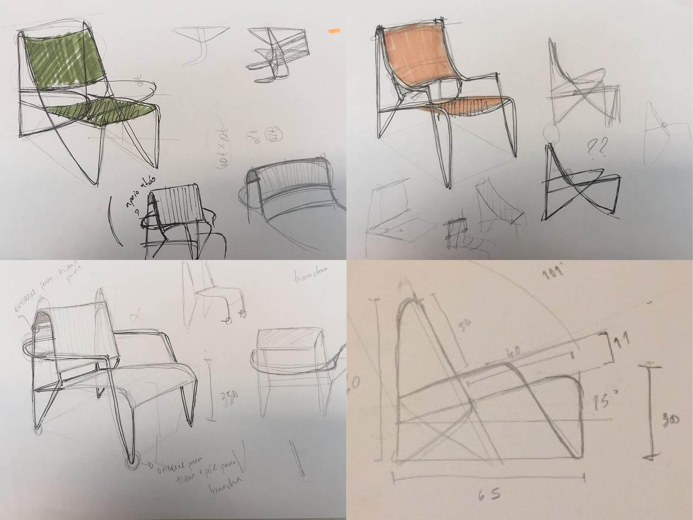
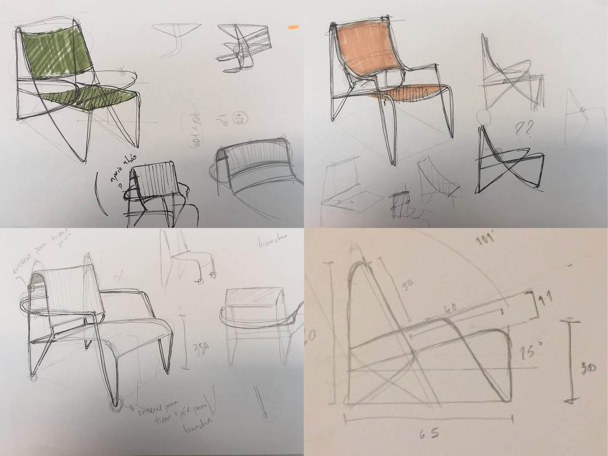
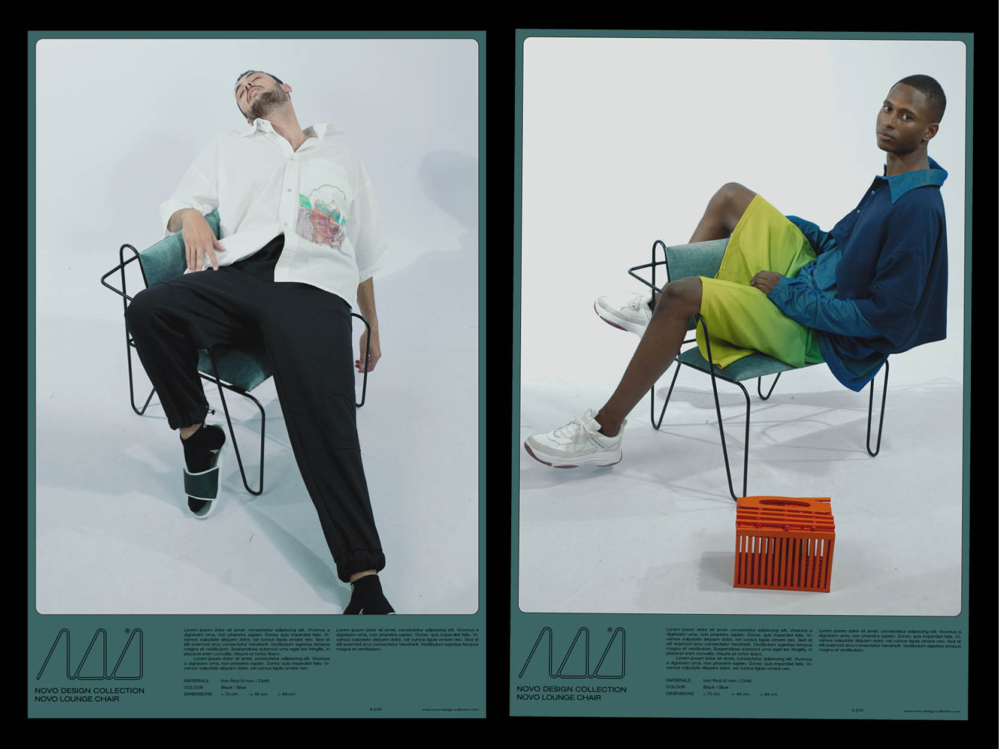
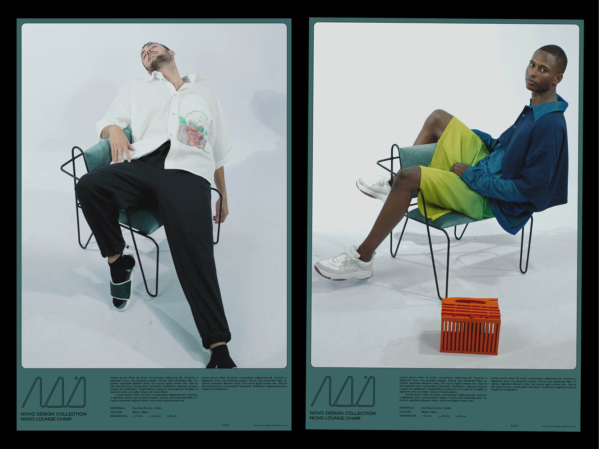
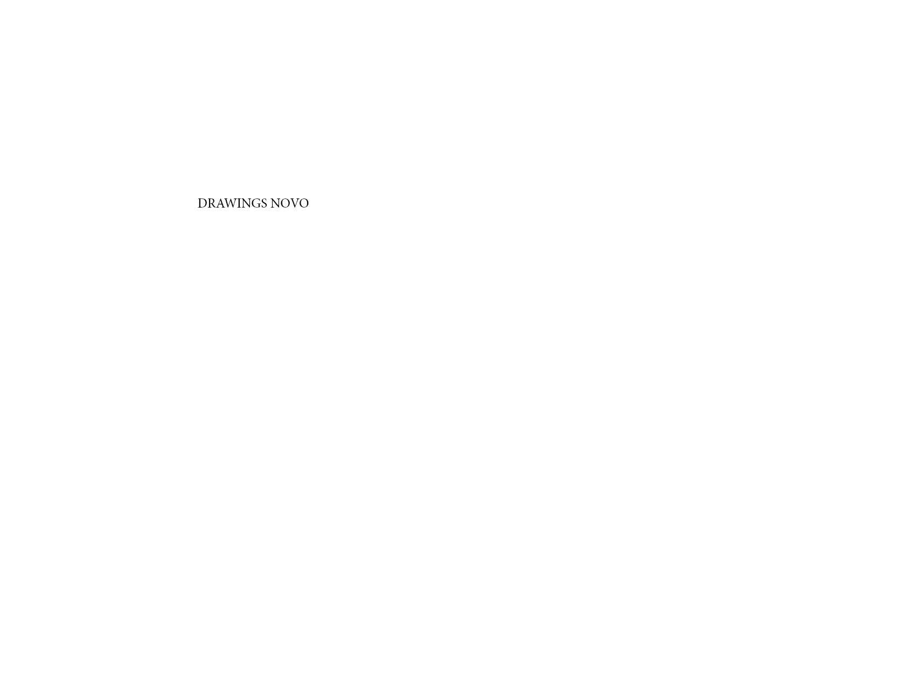
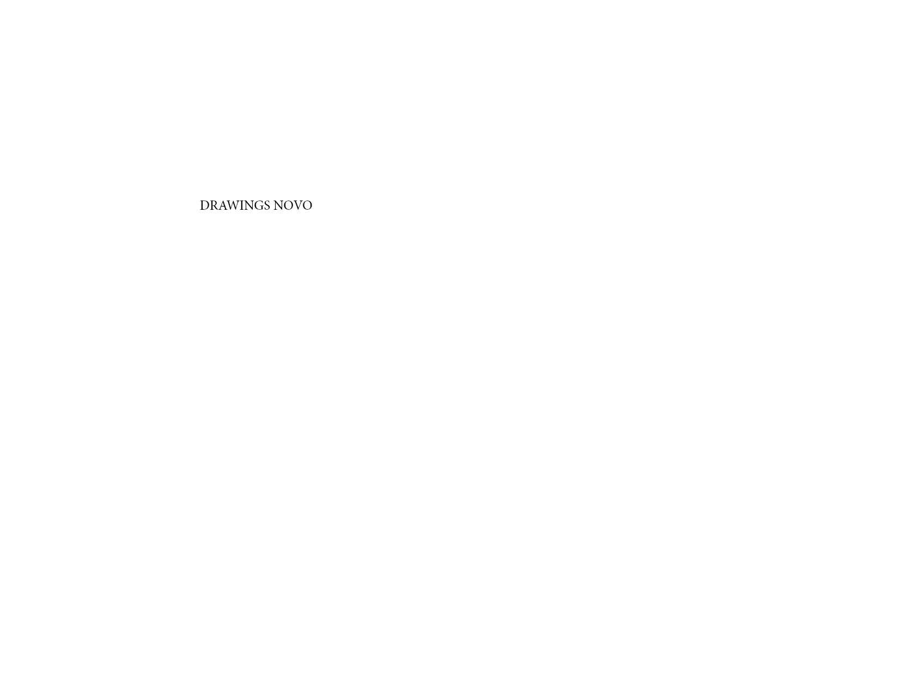
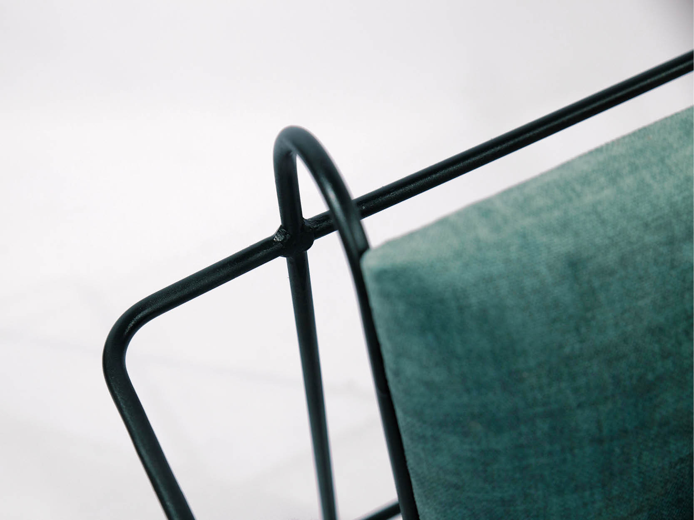
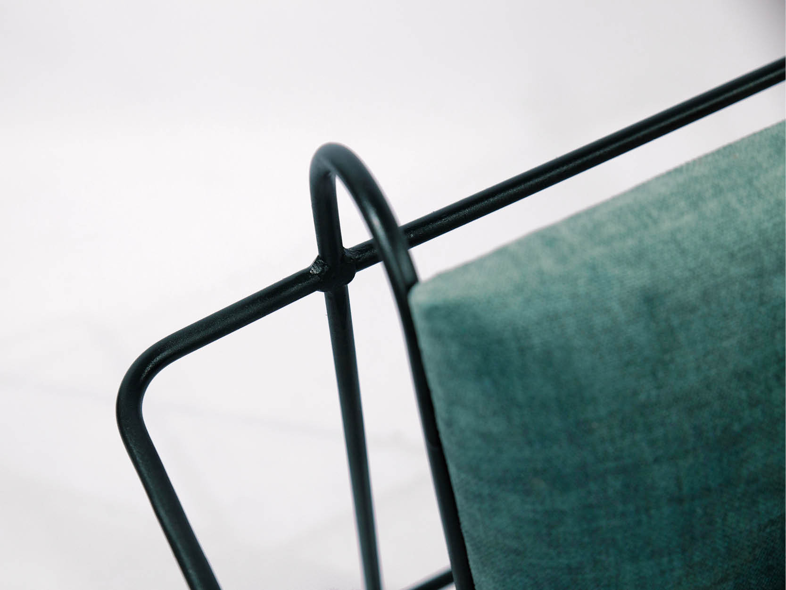

2022
unseen hands: a messy history of women in graphic design
Unseen Hands: a messy history of women in graphic design é um projeto editorial feminista que pretende chamar a atenção para a ausência de nomes de mulheres na história do design gráfico.
Inspirado no projeto Errata de Isabel Duarte e no texto de Martha Scotford “Messy History vs. Neat History: Toward an Expanded View of Women in Graphic Design” tenta refletir esta dualidade da história do design através de “erratas” com trabalhos de mulheres que vão sendo impostos ao longo do objeto gráfico.
A base do livro é a história linear — a história do design que percebe o design como uma prática solitária, focada na narrativa simples e que costuma omitir o trabalho coletivo e a presença das mulheres na história do design. À medida que se percorre esta historia, vamos nos deparando com a “messy” history imposta de uma forma brusca forçando-nos a olhar, a ver e a reconhecer.
Projeto académico para a disciplina de Narrativa Visual do Mestrado em Design e Multimédia. Orientação de Ana Boavida.


 



 

 


 
